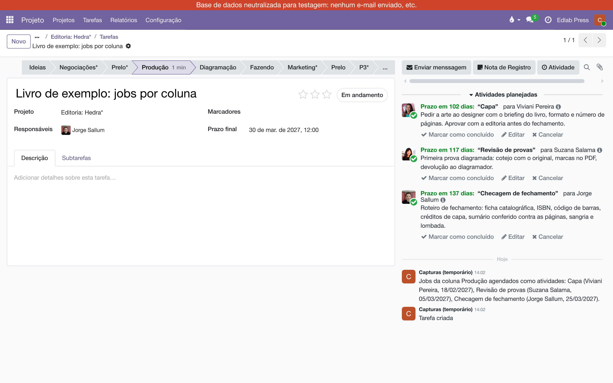

Um módulo para a produção editorial. O card do livro entra numa coluna — Produção, Prelo — e os jobs daquela coluna viram atividades dele: cada uma com responsável, roteiro e uma data contada do Prazo final. Nada é removido depois: as atividades são trabalho em curso.
O irmão deste módulo, Subtarefas pela estrela, serve ao marketing: a estrela diz quanto se espera do lançamento, e a pauta de divulgação vem dela como subtarefas. A produção não anda por expectativa, anda por colunas e prazos, e não precisa de cards novos: precisa que o card do livro ganhe as atividades certas, para as pessoas certas, nas datas certas. Todo livro que entra em Produção precisa de capa, revisão de provas e checagem de fechamento, cada coisa com o seu responsável e o seu roteiro — e cada coisa com uma data, porque o que manda é o dia em que o livro tem de estar pronto.
Os jobs moram na própria coluna. Cada job diz quem faz, em quantos dias vence e o que está escrito no roteiro (como checar o fechamento de um livro, por exemplo). Quando um card entra na coluna, cada job dela vira uma atividade no chatter do card, com o roteiro na nota — e o relógio do card no quadro passa a mostrar a mais próxima.
No quadro do projeto, passe o mouse no título da coluna, clique na engrenagem e em Editar. O formulário da coluna ganhou a aba Jobs. Cada linha é um job:
Acima da aba, o Período de produção da coluna: o número de dias que se conta para trás do Prazo final até o início da produção (60 por omissão). Cada coluna tem o seu; não há nada global no projeto nem nas Definições. Pode haver jobs em mais de uma coluna: Produção tem os seus, Prelo tem os seus, cada uma com o seu período. Arraste pela alça para reordenar.
Uma coluna pode ser compartilhada por mais de um projeto. Os jobs e o período são da coluna, e valem em todos os projetos em que ela aparece.
A conta parte do Prazo final do card e do Período de produção da coluna:
Um livro com Prazo final em 30/03 entra numa coluna com período de 60 dias: a produção começa em 29/01. A capa, em 20 dias, vence em 18/02 (−60 + 20); a revisão de provas, em 35 dias, vence em 05/03; a ficha ao gráfico, em 60 dias, vence no próprio 30/03. Os dias de cada job contam todos do início, não um depois do outro — por isso a ordem da lista não muda nenhuma data. Se Prelo tiver um período de 10 dias, os jobs de Prelo contam de 20/03.
Card sem Prazo final agenda os jobs contando de hoje, e a nota no chatter avisa. Quando o Prazo final for posto — ou mudar —, as atividades intocadas vão para as datas certas. Conta como mexida a atividade cuja data, responsável, nota ou tipo alguém alterou; essa fica como está. Se a revisora adiantou a revisão, a mudança do prazo do livro não desfaz isso.
Arraste o card para a coluna, no quadro, ou clique nela na barra do formulário. As atividades aparecem no chatter, com as datas, e uma nota registra o que foi agendado e para quem.

As regras são poucas:
Os dois módulos convivem no mesmo projeto e no mesmo card: a estrela traz a pauta de marketing como subtarefas, a coluna traz os jobs de produção como atividades. Um não mexe no que é do outro.
Manual completo, com busca e as demais páginas: Jobs por coluna.